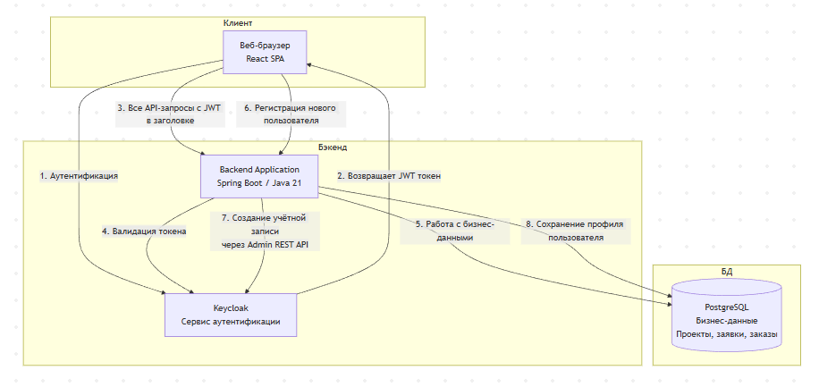

Введение
Введение
Документация по проекту, созданному в рамках практической работы 2 курса магистратуры по специальности "Разработка программного обеспечения" НИЯУ МИФИ.
Цель проекта
Создание современного веб-приложения для решения задачи обеспечения полного цикла заказа и строительства объектов индивидуального жилищного строительства.
Технологический стек
Команда
Проект разрабатывается командой из 5 человек с распределением ролей:
Задание
Партнёр предлагает разработать мобильное приложение или сайт, которые обеспечивают полный цикл заказа и строительства объектов индивидуального жилищного строительства (ИЖС).
Сервис должен поддерживать весь путь заказчика — от выбора проекта до завершения строительства и подписания финальных документов.
Целевая аудитория
- Люди, которые хотят заказать строительство объекта ИЖС.
- Пользователи, которым нужен единый цифровой инструмент для выбора проекта, согласования документов, наблюдения за ходом стройки и завершения всех формальных процедур.
Основные задачи на хакатоне
Команда должна реализовать пользовательский путь, описанный в брифе.
-
Выбор проекта.
Пользователь заходит в систему, выбирает проект и отправляет запрос на его строительство.
-
Согласование документации.
Пользователь проходит этап согласования документов через систему.
-
Этап строительства.
- Отображение видеопотока со стройки.
- Общение в чате со специалистом.
-
Завершение строительства.
Подписание всех оставшихся документов после окончания строительства.
Ожидаемый результат
По итогам выполнения кейса участники должны представить:
- Мобильное приложение или сайт, которые реализуют описанный путь пользователя: выбор проекта → согласование документации → просмотр видеопотока и чат → подписание документов.
- Прототип, демонстрацию или рабочую версию, в которой этот путь можно воспроизвести.
Участники должны учитывать все этапы, указанные в брифе.
Рекомендации для участников
- Внимательно придерживайтесь четырёх этапов пользовательского пути, указанного партнёром.
- Используйте аналог как пример структуры и визуального решения.
- Сосредоточьтесь на том, чтобы все этапы были последовательно связаны между собой.
- Обеспечьте возможность продемонстрировать путь пользователя от начала до конца.
- Не выходите за рамки брифа — реализуйте только то, что прямо указано партнёром.
Финальные артефакты
- Прототип мобильного приложения или сайта: отражает весь путь — выбор проекта → согласование документов → стройка (видео + чат) → подписание документов.
- Демонстрация пользовательского сценария: видео или презентация с проходом всех этапов.
- Краткое описание решения: как реализованы четыре шага из брифа.
- Набор экранов/макетов: все ключевые этапы пользовательского пути.
Глоссарий
Определения ключевых терминов, используемых в проекте:
Клиент
Физическое или юридическое лицо (Заказчик), выразившее намерение заключить договор подряда на выполнение работ по индивидуальному жилищному строительству (ИЖС) с Исполнителем.
Проект (Типовой/Архитектурный проект)
Утверждённый комплект проектно-сметной документации, включающий архитектурные, конструктивные и инженерные разделы, а также визуализации объекта. Является основным коммерческим предложением и базой для формирования Заказа.
Заявка
Формализованное обращение Клиента, содержащее выбранный Проект и реквизиты для связи. Инициирует процесс предварительного рассмотрения возможности заключения договора.
Статус заявки
Атрибут, определяющий текущее состояние обработки Заявки в рабочем процессе Компании.
- Создана — Заявка зарегистрирована в системе.
- На рассмотрении — Заявка находится в работе у ответственного Менеджера.
- По Заявке принято положительное решение, инициировано создание Заказа.
- По Заявке принято отрицательное решение с указанием причины.
Менеджер проекта
Уполномоченный сотрудник Компании (Исполнителя), ответственный за взаимодействие с Клиентом, администрирование коммерческих условий, координацию этапов работ и ведение документации в рамках конкретного Заказа.
Заказ
Основной учётный объект, представляющий собой совокупность данных о выполняемых работах по конкретному объекту Клиента. Содержит ссылку на Проект, документацию, историю коммуникаций, данные о ходе строительства и является юридическим и финансовым отражением Договора подряда в информационной системе.
Статус заказа
Атрибут, отражающий текущую фазу исполнения Заказа в соответствии с утверждённым проектом и календарным планом.
- Новый заказ — Заказ создан, ведутся подготовительные и организационные работы.
- Подготовка документации — Формирование и согласование пакета разрешительной и рабочей документации.
- Строительство — На объекте ведутся активные строительно-монтажные работы (детализируются Этапами строительства).
- Завершение работ — Выполнены основные работы, идёт процесс финальных согласований, устранения замечаний, подготовки к сдаче.
- Заказ закрыт — Объект сдан Клиенту, все обязательства исполнены, акты подписаны.
- Заказ отменен — Исполнение Заказа прекращено на основании расторжения Договора.
Этап строительства
Конкретный технологический процесс или комплекс работ в рамках статуса Заказа «Строительство». Служит для детального планирования, контроля и отчётности о ходе строительно-монтажных работ
Перечень этапов строительства:
- Подготовка участка: расчистка и разметка.
- Земляные работы: разработка котлована и траншей.
- Заливка фундамента.
- Возведение стен.
- Устройство межэтажных перекрытий и лестниц.
- Монтаж кровли.
- Установка окон и дверей.
- Наружная отделка и утепление фасада.
- Дополнительное утепление наружных стен.
- Электромонтажные работы.
- Сантехнические работы.
- Монтаж отопления и вентиляции.
- Выравнивание стен и потолков.
- Финишная внутренняя отделка.
- Укладка напольных покрытий.
- Покраска и декорирование помещений.
- Благоустройство территории.
Сценарий использования: Основной
ID: UC-001
Название: Регистрация нового пользователя
Актёры:
- Пользователь (незарегистрированный)
- Система
Предусловия:
- Пользователь находится на главной странице
- Пользователь не аутентифицирован
Основной поток:
- Пользователь нажимает кнопку "Регистрация"
- Система отображает форму регистрации
- Пользователь заполняет обязательные поля
- Пользователь отправляет форму
- Система проверяет данные
- Система создает учетную запись
- Система отправляет email подтверждения
- Система перенаправляет на страницу успешной регистрации
Постусловия:
- Создана новая учетная запись пользователя
- Отправлено письмо с подтверждением
- Пользователь может войти в систему после подтверждения email
Сценарий использования: Альтернативные
UC-001A: Пользователь уже существует
Шаг: 5. Система проверяет данные
Условие: Email уже зарегистрирован
Действие: Система показывает сообщение об ошибке "Пользователь с таким email уже существует"
UC-001B: Неверный формат данных
Шаг: 5. Система проверяет данные
Условие: Некорректный формат email или слабый пароль
Действие: Система показывает соответствующие сообщения об ошибках
Сценарий использования: Исключительные ситуации
E-001: Сбой сервера при регистрации
Шаг: 6. Система создает учетную запись
Ситуация: Ошибка базы данных
Обработка: Система показывает сообщение "Внутренняя ошибка сервера", логирует ошибку, предлагает повторить позже
E-002: Ошибка отправки email
Шаг: 7. Система отправляет email подтверждения
Ситуация: Ошибка SMTP сервера
Обработка: Учетная запись создается, но отмечается как неподтвержденная. Система помещает email в очередь на повторную отправку
Архитектура
Общая архитектура
Система построена по треёхуровневой клиент-серверной архитектуре, развёрнутой в Kubernetes-кластере.
Компоненты системы
| Компонент | Назначение |
|---|---|
| Клиентское приложение (Frontend) | SPA на React, обслуживаемое отдельным веб-сервером. |
| Серверное приложение (Backend) | Монолитное Spring Boot приложение на Java 21. |
| Сервис аутентификации | Keycloak, отвечающий за управление учётными записями. |
| База данных | PostgreSQL для хранения бизнес-данных. |
Безопасность
1. Общий подход
Все компоненты взаимодействуют по защищённым каналам связи с использованием HTTPS. Аутентификация и авторизация централизованы через сервис Keycloak.
2. Защита передаваемых данных
- HTTPS повсеместно: Все коммуникации между компонентами шифруются с использованием TLS.
- Сертификаты: В Kubernetes-кластере настроена автоматическая выдача и обновление SSL-сертификатов (через Cert-Manager с Let's Encrypt).
- JWT-токены: Все API-запросы содержат подписанные JWT-токены в заголовке
3. Сервис аутентификации и авторизации (Keycloak)
- Realm: Создан отдельный realm hackathon для изоляции окружения.
- Клиенты:
- hackathon-cli — клиент для веб-приложения (публичный).
- hackathon-backend — клиент для серверного приложения (конфиденциальный).
4. Ролевая модель (RBAC)
Роли в Keycloak:
- hackathon.user — базовая роль для клиентов
- hackathon.manager — роль для менеджеров строительной компании
Применение ролей:
- Роли добавляются пользователям в Keycloak администратором
- JWT токен содержит список ролей пользователя
- Backend валидирует наличие необходимых ролей для доступа к эндпоинтам
- Frontend динамически изменяет интерфейс в зависимости от ролей пользователя
Пример JWT токена:
{
"exp": 1768154817,
"iat": 1768154517,
"jti": "onrtro:1214304c-9d88-4ce5-94d7-7ac3264c0e4f",
"iss": "https://auth.mos-hack.ru/realms/hackathon",
"aud": "account",
"sub": "9b632fd5-6631-492e-b691-cbcc38abdb47",
"typ": "Bearer",
"azp": "hackathon-cli",
"sid": "5ae40795-19fb-4f71-af99-e43694838d4d",
"acr": "1",
"allowed-origins": [
"*"
],
"realm_access": {
"roles": [
"offline_access",
"hackathon.user",
"uma_authorization",
"default-roles-hackathon"
]
},
"resource_access": {
"account": {
"roles": [
"manage-account",
"manage-account-links",
"view-profile"
]
}
},
"scope": "email profile",
"email_verified": true,
"roles": [
"ROLE_offline_access",
"ROLE_uma_authorization",
"ROLE_hackathon.user",
"ROLE_default-roles-hackathon",
"ROLE_manage-account",
"ROLE_view-profile",
"ROLE_manage-account-links"
],
"name": "user user",
"preferred_username": "user",
"given_name": "user",
"family_name": "user",
"email": "user@mail.com"
}Инфраструктура: Деплоймент
Процесс развертывания
# Клонирование репозитория
git clone https://github.com/project/repo.git
# Установка зависимостей
npm install
# Сборка проекта
npm run build
# Запуск контейнеров
docker-compose up -d
# Применение миграций БД
npm run migrateОкружения
- Development: Локальные машины разработчиков
- Staging: Тестовый сервер, идентичный production
- Production: Рабочие сервера на AWS
Инфраструктура: Мониторинг
Метрики мониторинга
- Загрузка CPU, RAM, дисковой подсистемы
- Время отклика приложения
- Количество запросов в секунду
- Процент ошибок
- Доступность сервисов
Инструменты
- Prometheus: Сбор метрик
- Grafana: Визуализация метрик
- ELK Stack: Логирование
- Sentry: Отслеживание ошибок
Инфраструктура: Логирование
Стратегия резервного копирования
- Ежедневно: Полный бэкап БД
- Каждый час: Инкрементальный бэкап
- Хранение: 30 дней локально, 1 год в холодном хранилище
Процедура восстановления
- Остановить приложение
- Восстановить БД из бэкапа
- Проверить целостность данных
- Запустить приложение
- Провести тестирование
Фронтенд
Структура проекта
src/
├── components/ # React компоненты
├── pages/ # Страницы приложения
├── store/ # Redux store
├── services/ # API вызовы
├── utils/ # Вспомогательные функции
└── styles/ # СтилиОсновные библиотеки
- React 18: Библиотека для построения UI
- TypeScript: Статическая типизация
- Redux Toolkit: Управление состоянием
- React Router: Маршрутизация
- Axios: HTTP клиент
- Material-UI: Компоненты интерфейса
Бэкенд
Структура API
GET /api/users # Получить список пользователей
POST /api/users # Создать пользователя
GET /api/users/{id} # Получить пользователя
PUT /api/users/{id} # Обновить пользователя
DELETE /api/users/{id} # Удалить пользователяСервисы
- Auth Service: Аутентификация и авторизация
- User Service: Управление пользователями
- Data Service: Операции с бизнес-данными
- Notification Service: Отправка уведомлений
Базы данных
- PostgreSQL: Основное хранилище данных
- Redis: Кэширование, сессии
- Elasticsearch: Полнотекстовый поиск